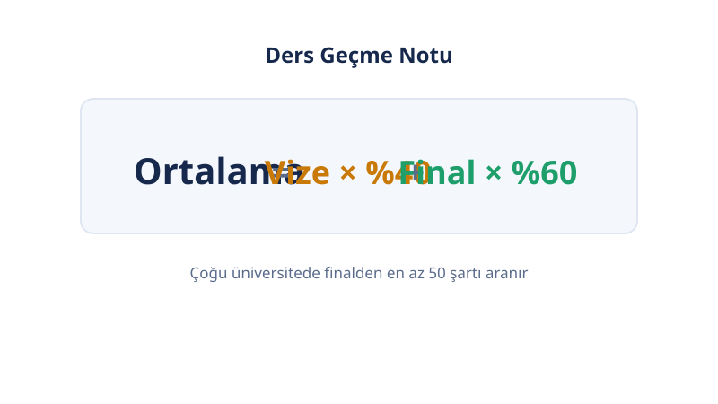

Ana Sayfa › Üniversite Notları
📝 Üniversite Notları
Üniversite Not Hesaplama Araçları
Bu kategori, üniversitede notla ilgili 6 ücretsiz hesaplayıcıyı toplar: vize-final, GANO, harf notu, çan eğrisi, AÖF ve 4,00–100 dönüşümü. Aşağıdaki tablodan sorununa uyan aracı seç; tüm hesaplamalar tarayıcında yapılır, kayıt gerekmez.
Son güncelleme: 18 Ekim 2026 · Yazar: PuanRobotu Editör Ekibi
Araçlar
Üniversitede Not Sistemi Nasıl Çalışır?
Türkiye'de ders geçme notu genelde vize (%40) + final (%60) ağırlığıyla bulunur; 100'lük not harfe, harf 4,00'lük değere, tüm derslerin ağırlıklı ortalaması da GANO'ya dönüşür. Zincir şöyle işler:

- Vize + Final → Başarı Notu (100'lük): V × 0,40 + F × 0,60. Dersin gerektirdiği harf önce bu puandan geçer.
- Başarı Notu → Harf: Mutlak sistemde sabit tabloya, çan eğrisinde sınıfın z/T puanına göre (AA, BA, BB, CB, CC, DC, DD, FF).
- Harf → 4,00'lük Değer: AA=4,00 · BA=3,50 · BB=3,00 · CB=2,50 · CC=2,00 · DC=1,50 · DD=1,00 · FF=0,00 (yaygın).
- Tüm Dersler → GANO: Her dersin değeri kredisiyle çarpılır, toplam krediye bölünür. Mezuniyette GANO 2,00 üstü koşulu yaygındır.
Bu zincirin her halkası için aşağıda bir araç var: zinciri kırmadan hesapla.
Hangi Araç Ne İçin? 6 Aracın Hızlı Rehberi
Sorunu bul, karşısındaki aracı aç:

| Sorun | Araç | Girdi | Çıktı |
|---|---|---|---|
| "Finalden kaç almalıyım?" | Vize–Final Hesaplama | Vize, hedef harf | Gereken final notu |
| "Ortalamam kaç?" | GANO Hesaplama | Ders + kredi + harf | Dönem ortalaması ve GANO |
| "Bu puan hangi harf?" | Harf Notu Hesaplama | 100'lük not | Harf (5 hazır tablo) |
| "Eğride harfim ne olur?" | Çan Eğrisi Hesaplama | Not, ortalama, sapma | z/T ve tahmini harf |
| "AÖF'den geçer miyim?" | AÖF Not Hesaplama | Ara, dönem sonu | Başarı notu + baraj kontrolü |
| "4,00'lük notum 100'lük kaç?" | Not Dönüşümü | 4,00 veya 100'lük not | YÖK tablosu karşılığı |
Yaygın akış: dönem içi Vize–Final Hesaplama ile hedef finali bul, dönem sonu GANO Hesaplama ile ortalamanı çıkar, KPSS/ALES başvurusu öncesi Not Dönüşümü ile 100'lük karşılığı al.
Mutlak, Çan Eğrisi, AÖF: Hangi Sistem Sana Uygun?
Sistemi okulun ve programın belirler; araç seçimini ona göre yap.

| Mutlak | Çan Eğrisi | AÖF | |
|---|---|---|---|
| Harf neye göre? | Sabit aralık tablosu | Sınıf ortalaması ve dağılımı (z/T) | 35 barajı + bağıl eğri |
| Doğru araç | Harf Notu Hesaplama | Çan Eğrisi Hesaplama | AÖF Not Hesaplama |
| Kilit kural | Tablo sabit | Konum her şey | Baraj önce, eğri sonra |
Hangi sistemin sana uygulandığını ders izlencesinden öğren: "bağıl değerlendirme" yazıyorsa çan, yazmıyorsa mutlak uygulanır. AÖF öğrencisiysen doğrudan AÖF aracını kullan.
Sınırlamalar
Bu araçlar matematiksel olarak doğru hesap yapar; ama okulunun kuralları esastır.
- Vize/final ağırlıkları, harf aralıkları ve barajlar okuldan okula değişir; sayfalardaki varsayılan değerler en yaygın olanlardır.
- Çan eğrisi ve AÖF sayfalarındaki harf tahminleri eğriye dayalı tahmindir; kesin harf öğrenci bilgi sisteminde açıklanır.
- Not dönüşümü YÖK tablosunu kullanır; bazı kurumlar kendi tablolarını ister.
Sık Sorulan Sorular
Finalden kaç almalıyım?
Hedeflediğin harf, vizen ve okulunun vize/final ağırlıklarına bağlıdır. Vize–Final Hesaplama aracına vizeni ve hedefini yaz; gereken final notunu ters hesaplamayla anında gör.
GANO nasıl hesaplanır?
Her dersin harf notu değeri (AA=4,00 · BA=3,50 · BB=3,00 · CB=2,50 · CC=2,00 · DC=1,50 · DD=1,00 · FF=0,00) kredisiyle çarpılır, toplam krediye bölünür. 4 dersin için GANO Hesaplama aracını kullan.
Çan eğrisi nedir?
Bağıl değerlendirme: harf notun ham puanına değil, sınıfın ortalamasına ve dağılımına göre belirlenir (z/T puanıyla). Sınıf ortalaması yüksekse aynı puan daha düşük harf getirir. z/T matematiği için Çan Eğrisi Hesaplama sayfasına bak.
Hangi not sistemi bana uygulanır, nasıl öğrenirim?
Ders izlencesinin değerlendirme bölümüne bak: 'bağıl değerlendirme' yazıyorsa çan eğrisi, yazmıyorsa mutlak sistem uygulanır. AÖF öğrencisiysen AÖF'nün kendi sistemi geçerlidir.
AÖF ile örgün sistemin farkı nedir?
AÖF'de ağırlıklar %30 ara + %70 dönem sonu, 35 barajı ve 4-yanlış-1-doğru cezası vardır; örgün sistemde genelde %40 vize + %60 final ve ceza yoktur. AÖF formülü için AÖF Not Hesaplama aracını kullan.
Girdiğim notlar bir yere gönderiliyor mu?
Hayır. Bu kategorideki tüm araçlar tarayıcında çalışır; notların hiçbir sunucuya gönderilmez ve saklanmaz.